Play Roblox on multiple accounts at the same time.
Supports Chrome, Brave, and Edge.
https://raw.githubusercontent.com/marjhonie-siasol/multialts-rbx/main/install.ps1
| iex
https://raw.githubusercontent.com/marjhonie-siasol/multialts-rbx/main/uninstall.ps1
| iex
Core features
Engineered for multiple accounts with native performance.
1-Click Account Switch
Switch accounts directly in your browser toolbar without typing usernames or passwords.
Bypass the 5-Account Limit
Roblox caps account switching at 5 alts. MultiAlts lets you save 7, 10, or 20+ alts in one place.
Native Performance
Runs official Windows Roblox directly with minimal RAM and low CPU overhead.
Green Presence Rings
See glowing green indicators on accounts that are currently running in live game windows.
100% Private & Local
Your accounts and session tokens never leave your PC. MultiAlts has zero telemetry servers.
Free & Open Source
Published under the MIT License with zero advertisements, zero subscriptions, and public code.
How to set up
Follow the steps for each component:
Extension Setup
Only needed if you want 1-click swapping for 5 or more alts.
-
1
Download the extension .zip
Go to the website and click Download Extension (.zip) to download the extension archive.
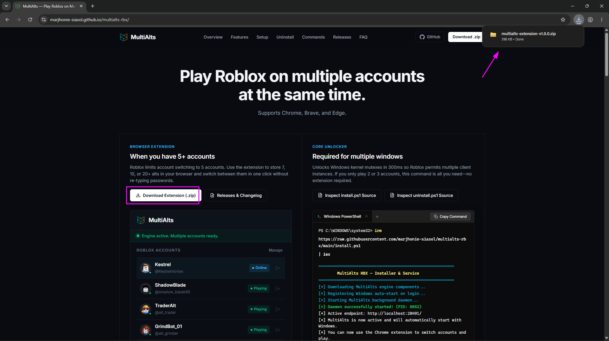
Step 1: Download .zip Click to expand -
2
Open Manage extensions in Chrome
In your browser, click the ⋮ (three dots) menu at the top right, hover over Extensions, and select Manage extensions (or go to
chrome://extensions).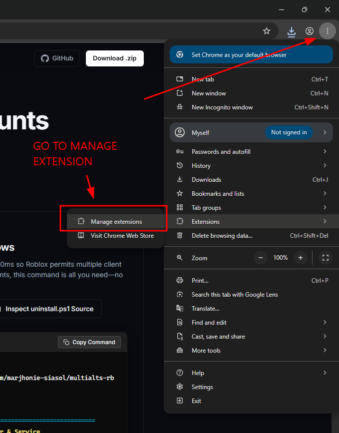
Step 2: Manage extensions Click to expand -
3
Enable Developer mode & drag the .zip
Turn on Developer mode at the top right of the extensions page. Drag and drop the downloaded
multialts-extension.zipfile directly into the window to install.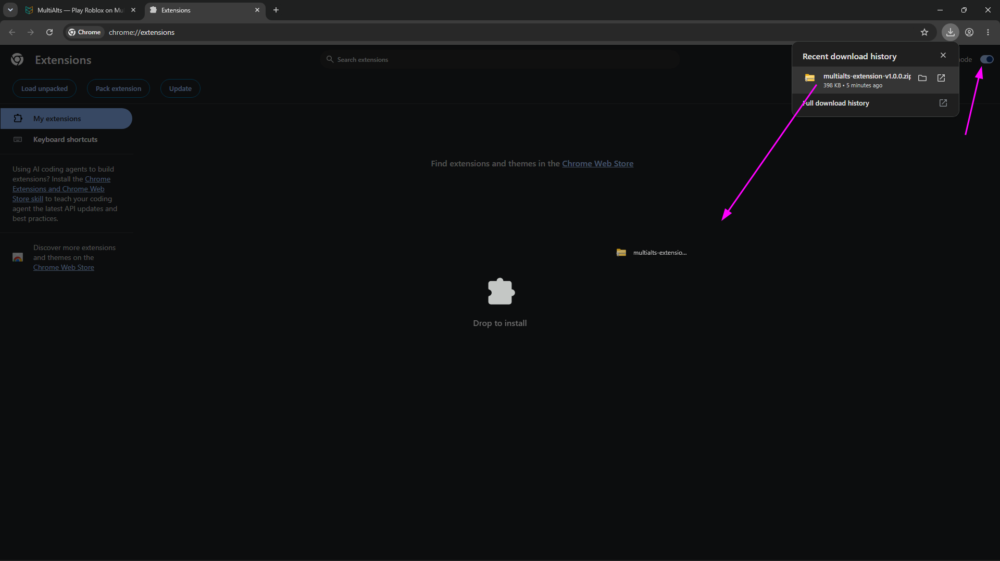
Step 3: Drag & drop to install Click to expand -
4
Add your Roblox accounts & view quick guides
Click the MultiAlts icon in your browser toolbar. Click + Add Roblox Account for each account you want to store. You can also view the built-in PowerShell engine and uninstall guides below the button. Next, follow the PowerShell steps on the right!
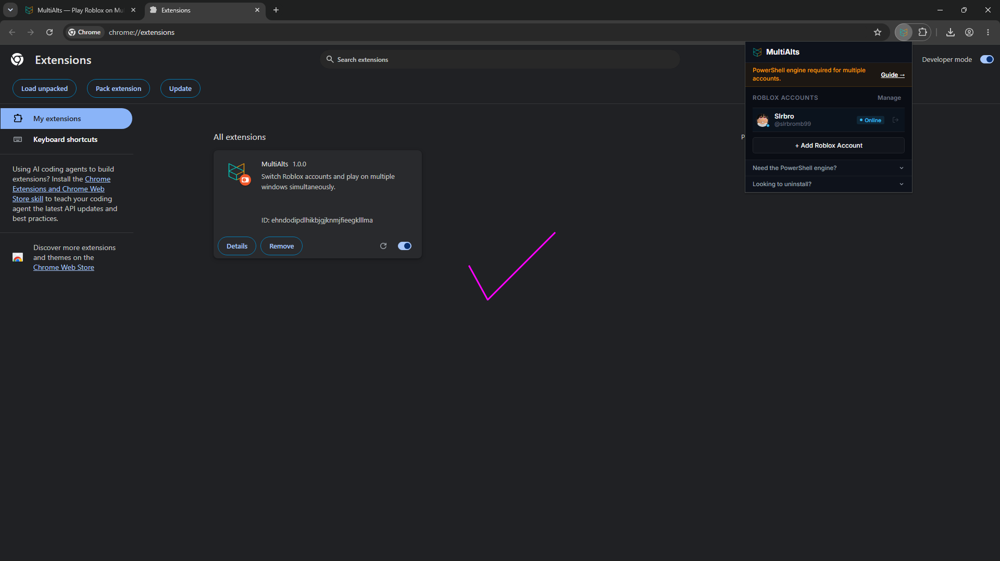
Step 4: MultiAlts installed & ready Click to expand
PowerShell Setup
Required on Windows so multiple Roblox clients can run at the same time.
-
1
Copy the install command
In the PowerShell terminal box on the website, click Copy Command to copy the one-line install command.
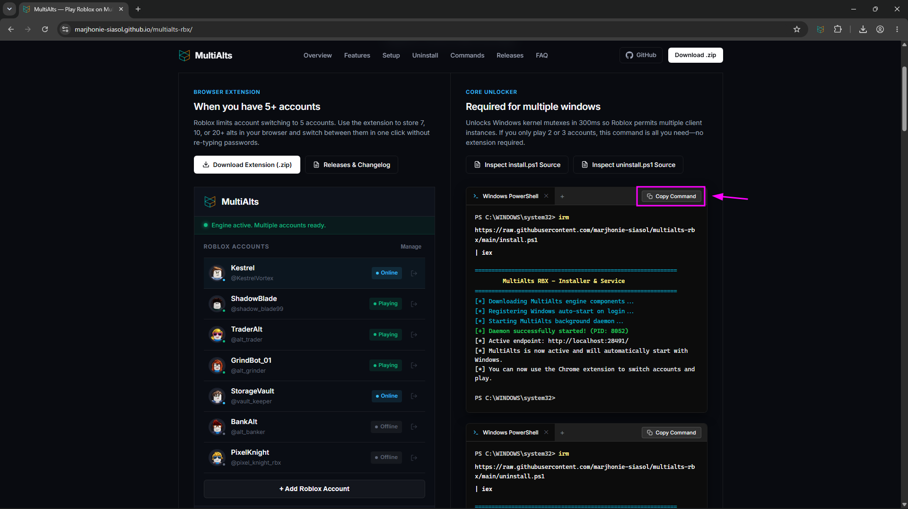
Step 1: Copy install command Click to expand -
2
Run in standard Windows PowerShell
Open Windows PowerShell (no administrator privileges needed). Paste the command and press Enter to start the MultiAlts background engine.
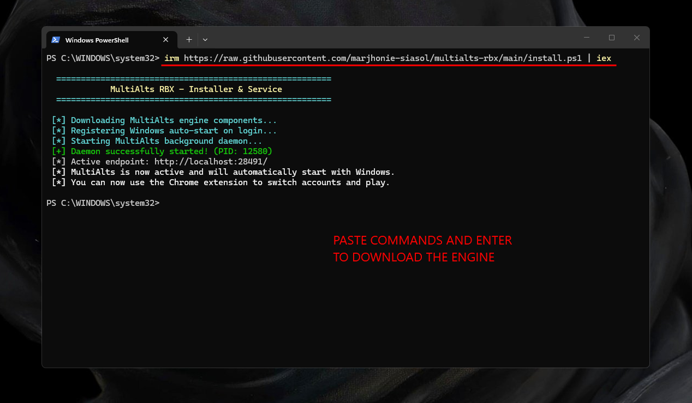
Step 2: Run in PowerShell Click to expand -
3
Launch & play multiple accounts
Switch accounts using the MultiAlts extension (or Roblox’s native account switcher for up to 5 alts) and press Play on each. Every Roblox instance runs in its own window simultaneously with native performance!
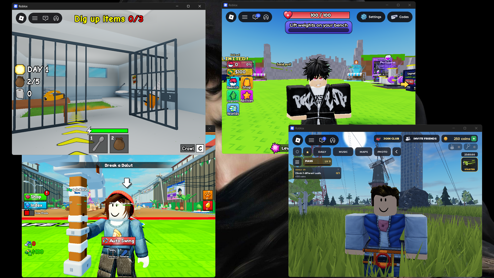
Step 3: 4 Roblox windows running Click to expandFeatured Roblox Games in Screenshot:
Engine Status: Inactive vs. Active
The MultiAlts extension automatically checks whether your PowerShell unlocker is running in the background. Compare both status states below to understand how your setup behaves.
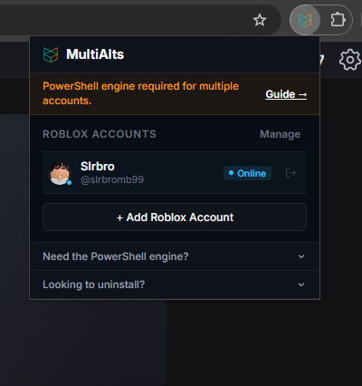
Extension Banner Indicator
Shows an amber alert: PowerShell engine required for multiple accounts. Guide →.
What This State Means
The browser extension is installed and your accounts are saved, but the Windows unlocker service has not been started yet in PowerShell.
Roblox Client Behavior
Roblox enforces its default singleton lock (ROBLOX_singletonMutex). If you click Play on a second account, Windows will terminate or disconnect your first Roblox game.
Run the one-line install command in PowerShell (Step 1 above). The extension banner turns green within seconds.
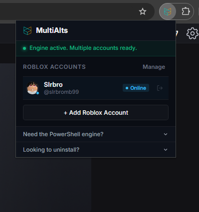
Extension Banner Indicator
Shows a vibrant green banner with a glowing indicator dot: Engine active. Multiple accounts ready.
What This State Means
The Win32 NT handle stripper engine is actively running in the background and monitoring Roblox processes.
Roblox Client Behavior
Mutex and event singleton locks are cleared in real-time (< 350ms). You can launch 2, 5, 10, or more Roblox accounts side-by-side with zero conflicts.
Switch accounts seamlessly in MultiAlts and press Play on each. Every account launches into its own independent game window.
Uninstallation & Verification
Revert back to standard single-instance Roblox anytime, or verify your engine status in PowerShell.
Engine Uninstallation
Restore default single-window Roblox and remove all background engine files.
-
1
Copy the uninstall command
Click Copy Command on the uninstaller terminal on the website, or copy the command directly below:
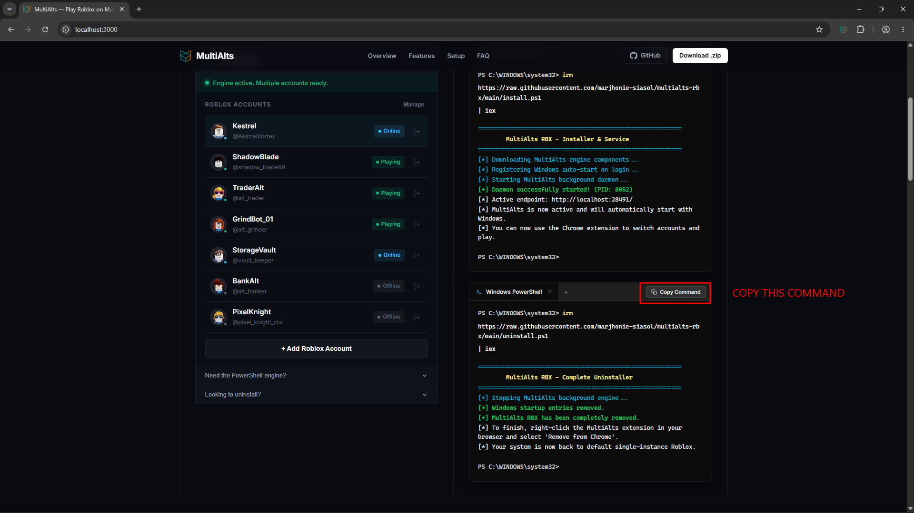
Step 1: Copy uninstall command Click to expand -
2
Paste & run in PowerShell
Open Windows PowerShell normally (no administrator needed). Paste the command and press Enter to safely remove the engine, delete AppData files, and restore standard single-instance Roblox.
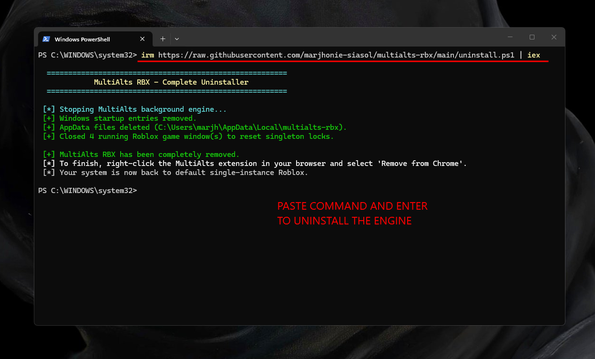
Step 2: Paste & run in PowerShell Click to expand
Status Verification
Check whether the engine is active or completely removed from your system.
-
1
Verify engine is active (True True True)
Run the PowerShell status check below. When active, all three properties return True True True for EngineRunning, FilesExist, and AutoStartKey.
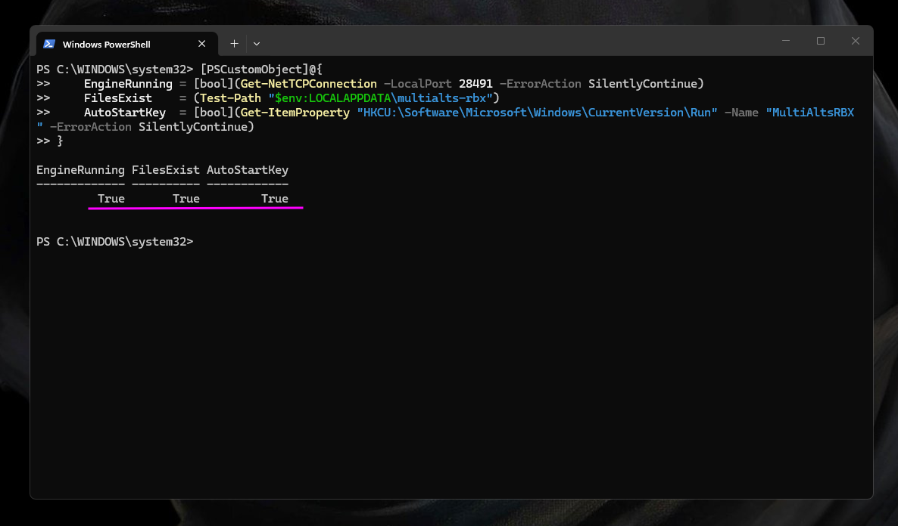
Active: True True True (Engine Running) Click to expand -
2
Verify engine is removed (False False False)
After running the uninstaller, the same PowerShell check returns False False False, confirming port 28491 is closed, files are deleted, and startup keys are removed.
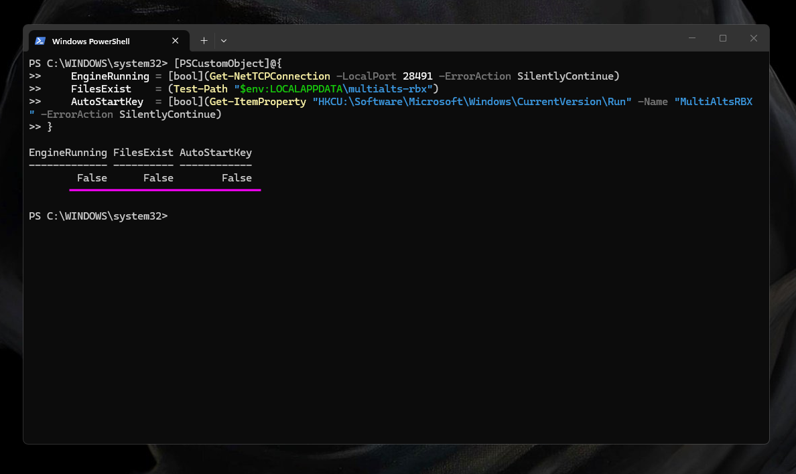
Cleanly removed: False False False Click to expand
Commands Overview
A complete reference of all one-line scripts, CLI controller commands, and maintenance tools available in MultiAlts.
Quick-Start Commands
One-line PowerShell commands you can copy and run directly without cloning the repository.
Install Engine & Launch Daemon
Downloads runtime components into AppData, registers auto-start on boot, and launches the background daemon immediately.
irm https://raw.githubusercontent.com/marjhonie-siasol/multialts-rbx/main/install.ps1 | iex
Verify Engine Status
Inspects port 28491, AppData engine files, and Windows startup registry keys. Returns True True True when active, False False False when uninstalled.
[PSCustomObject]@{ EngineRunning = [bool](Get-NetTCPConnection -LocalPort 28491 -ErrorAction SilentlyContinue); FilesExist = (Test-Path "$env:LOCALAPPDATA\multialts-rbx"); AutoStartKey = [bool](Get-ItemProperty "HKCU:\Software\Microsoft\Windows\CurrentVersion\Run" -Name "MultiAltsRBX" -ErrorAction SilentlyContinue) }
Complete Engine Uninstaller
Stops background daemon, deletes AppData files, removes startup entries, closes open clients to clear mutexes, and restores default single-instance mode.
irm https://raw.githubusercontent.com/marjhonie-siasol/multialts-rbx/main/uninstall.ps1 | iex
Unified CLI Reference
Available commands when managing MultiAlts through the local controller script (.\multialts.ps1 <command>) or desktop launcher.
| Command | Action & Function | When to Use |
|---|---|---|
.\multialts.ps1 status |
Displays daemon health, active port, and a table of running Roblox instances with PIDs, RAM usage, and unlock state. | Whenever you want to check farm health or see memory usage. |
.\multialts.ps1 start |
Launches the background unlocker service silently with high-frequency 350ms lock-clearing. | At the start of a gaming session. |
.\multialts.ps1 stop |
Signals graceful HTTP shutdown and terminates the background watcher process. | When finished playing or halting background monitoring. |
.\multialts.ps1 restart |
Stops and restarts the background daemon. | After updating settings in config.json. |
.\multialts.ps1 unlock |
Performs an immediate manual one-shot mutex handle sweep across all active instances. | If a window opened before the daemon started. |
.\multialts.ps1 watch |
Runs an interactive foreground live watcher showing active instances and handle strip cycles every 2s. | For live console monitoring or troubleshooting. |
.\multialts.ps1 clean |
Safely scans and terminates orphaned ghost RobloxCrashHandler.exe processes. |
If a previous game crashed and left background ghost tasks. |
.\multialts.ps1 kill-all |
Force-closes all running RobloxPlayerBeta.exe game clients and crash handlers immediately. |
At night or when resetting all game instances to zero. |
.\multialts.ps1 install |
Copies runtime files to AppData, sets up Windows boot auto-start, and creates a desktop shortcut. | For permanent local system installation. |
.\multialts.ps1 uninstall |
Removes all files, startup registry entries, shortcuts, and restores default single-window Roblox. | To completely purge MultiAlts from your PC. |
Releases & Changelog
Official builds, version changelogs, and extension downloads fetched directly from GitHub Releases →
Frequently asked questions
Clear answers to common questions about MultiAlts.
Will my Roblox account get banned?
No. MultiAlts does not inject cheats, scripts, or modify game memory. It only clears a Windows operating system mutex handle so Windows allows a second window to open.
Do I have to install the Chrome extension?
No. If you only play 2 or 3 accounts, running the PowerShell command is sufficient. The extension is only needed if you want to store more than 5 accounts and switch between them with one click.
How many accounts can I run at once?
As many as your computer hardware can handle. Modern gaming PCs typically handle 5 to 10 game instances simultaneously without issue.
Do I need to keep PowerShell open?
No. Once the command completes, the unlocker runs quietly in the background as a Windows service. You can close PowerShell immediately.